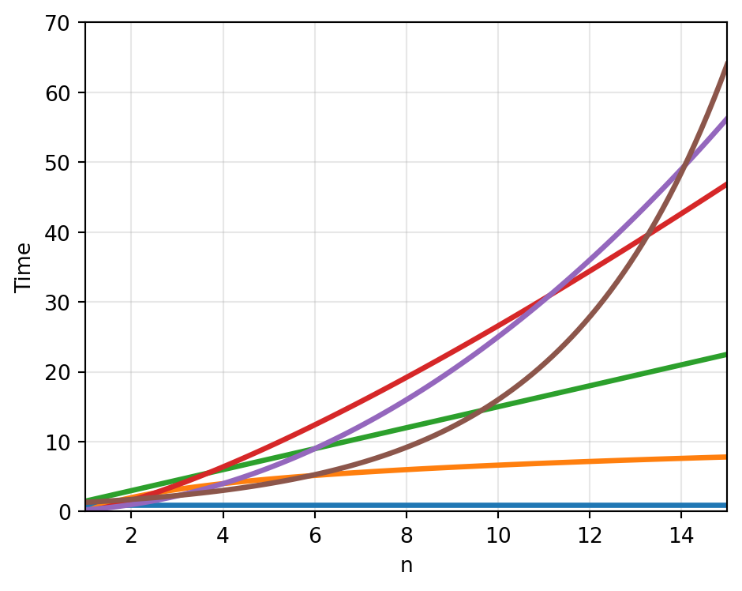
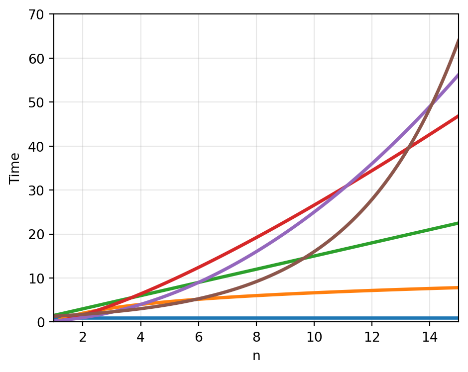

Week 1, Tuesday
January 6, 2026
Naive search: “Linear” — too slow
Hash lookup: “Constant” — instant
| 0 | 1 | 2 | 3 | 4 | 5 | 6 | 7 | … | 99,999,999 |
|---|---|---|---|---|---|---|---|---|---|
| 🎵 | 🎵 | 🎵 | 🎵 | 🎵 | 🎵 | 🎵 | 🎵 | … | 🎵 |
What does this do?
How many lines of code are executed?
sample is at position… |
time |
|---|---|
| 0 | instant |
| 5 | longer |
| 15 | longer |
| not in array | longest |
What’s a good name?
What’s a good expression for running time? $T(n) = $
| n | operations |
|---|---|
| 10 | 10 |
| 100 | 100 |
| 1000 | 1000 |
Trace for n = 4. How many increments?
Trace for n = 5.
\[1 + 2 + 3 + \ldots + n = \frac{n(n+1)}{2}\]
Trace for n = 1000.
| Pattern | What happens when n doubles? | Name |
|---|---|---|
| Single loop | Work doubles | O(n) |
| Nested loops | Work quadruples | O(n²) |
| Halving | One more step | O(log n) |
| Notation | Name |
|---|---|
| O(1) | Constant |
| O(log n) | Logarithmic |
| O(n) | Linear |
| O(n log n) | Linearithmic |
| O(n²) | Quadratic |
| O(2ⁿ) | Exponential |

df.merge() uses hashing internally.
O(n), not O(n²).
Both touch every row: O(n)
But:
The full hierarchy. Racing algorithms. Feeling the difference.